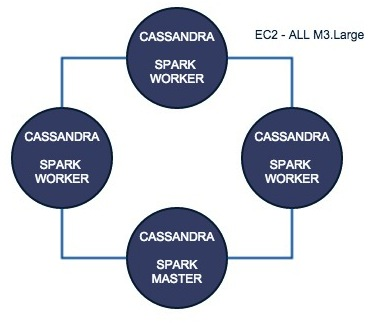

Feelin' the Flow
Getting your Data Moving with Spark and Cassandra
Presented by Rich Beaudoin / @RichGBeaudoinOctober 14th, 2014
About me...
- Sr. Software Engineer at Pearson
- Organizer of Distributed Computing Denver
- Lover of Music
- All around solid dude
Overview
- What is Spark
- The problem it solves
- The core concepts
- Spark integration with Cassandra
- Tables as RDDs
- Writing RDDs to Cassandra
- Question and Summary
What is Spark?
Apache Spark™ is a fast and general engine for large-scale data processing.
- Created by AMPLab at UC Berkeley
- Became Apache Top-Level Project in 2014
- Supports Scala, Java, and Python APIs
The Problem, part one...
Approaches like MapReduce read from, and store to HDFS
 ...so each cycle of processing incurs latency from HDFS reads
...so each cycle of processing incurs latency from HDFS reads
The Problem, part two...
Any robust, distributed data processing framework needs fault tolerance
But existing solutions allow for "fine-grained" (cell level) updates, which can complicate the handling of faults where data needs to be rebuilt/recalculatedSpark attempts to address these two problems
Solution 1: store intermediate results in memory
Solution 2: introduce a new expressive data abstraction
RDD
A Resilient Distributed Dataset (RDD) is an an immutable, partioned record that supports basic operations (e.g. map, filter, join). It maintains a graph of transformations in order to enable recovery of a lost partition
*See the RDD white paper for more details
Transformations and Actions
"transformation" creates another RDD, is evaluated lazily
"action" returns a value, evaluated immediately
RDDs are Expressive
It turns out that coarse-grained operations cover many existing parrallel computing cases
Consequently, the RDD abstraction can implement existing systems like MapReduce, Pregel, Dryad, etc.
Spark Cluster Overview

Spark can be run with Apache Mesos, HADOOP Yarn, or it's own standalone cluster manager
Job Scheduling and Stages

Spark and Cassandra
If we can turn Cassandra data into RDDs, and RDDs into Cassandra data, then the data can start flowing between the two systems and give us some insight into our data.
The Spark Cassandra Connector allows us to perform the transformation from Cassadra table to RDD and then back again!
The Setup
From Cassandra Table to RDD
import org.apache.spark._
import com.datastax.spark.connector._
val rdd = sc.cassandraTable("music", "albums_by_artist")
Run these commands spark-shell, requires specifying the spark-connector jar on the commandline
Simple MapReduce for RDD Column Count
val count = rdd.map(x => (x.get[String]("label"),1)).reduceByKey(_ + _)
Save the RDD to Cassandra
count.saveToCassandra("music", "label_count",SomeColumns("label", "count"))
Cassandra with SparkSQL
import org.apache.spark.sql.cassandra.CassandraSQLContext
val cc = new CassandraSQLContext(sc)
val rdd = cc.sql("SELECT * from music.label_count")
Joins!!!
import sqlContext.createSchemaRDD
import org.apache.spark.sql._
case class LabelCount(label: String, count: Int)
case class AlbumArtist(artist: String, album: String, label: String, year: Int)
case class AlbumArtistCount(artist: String, album: String, label: String, year: Int, count: Int)
val albumArtists = sc.cassandraTable[AlbumArtist]("music","albums_by_artists").cache
val labelCounts = sc.cassandraTable[LabelCount]("music", "label_count").cache
val albumsByLabelId = albumArtists.keyBy(x => x.label)
val countsByLabelId = labelCounts.keyBy(x => x.label)
val joinedAlbums = albumsByLabelId.join(countsByLabelId).cache
val albumArtistCountObjects = joinedAlbums.map(x => (new AlbumArtistCount(x._2._1.artist, x._2._1.album, x._2._1.label, x._2._1.year, x._2._2.count)))
Other Things to Check Out
Questions?
THE END
References